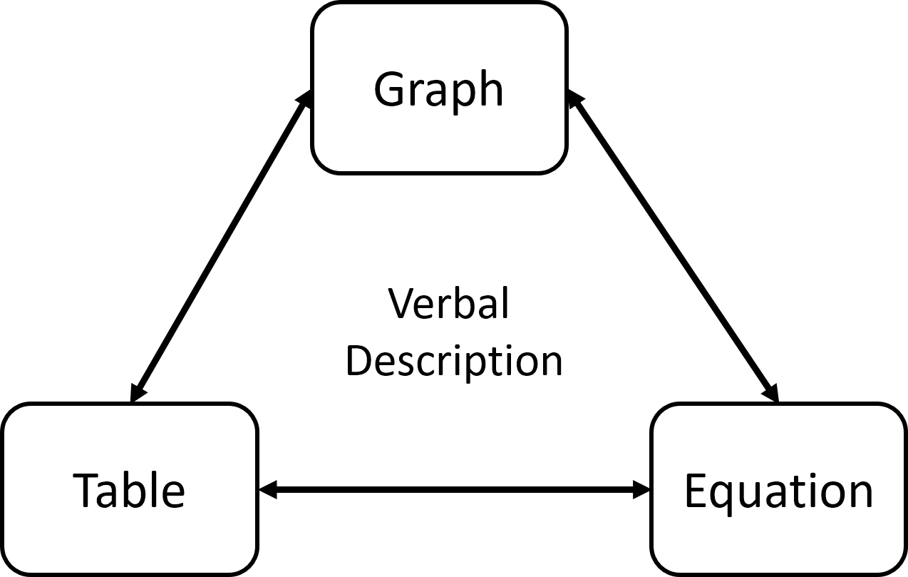
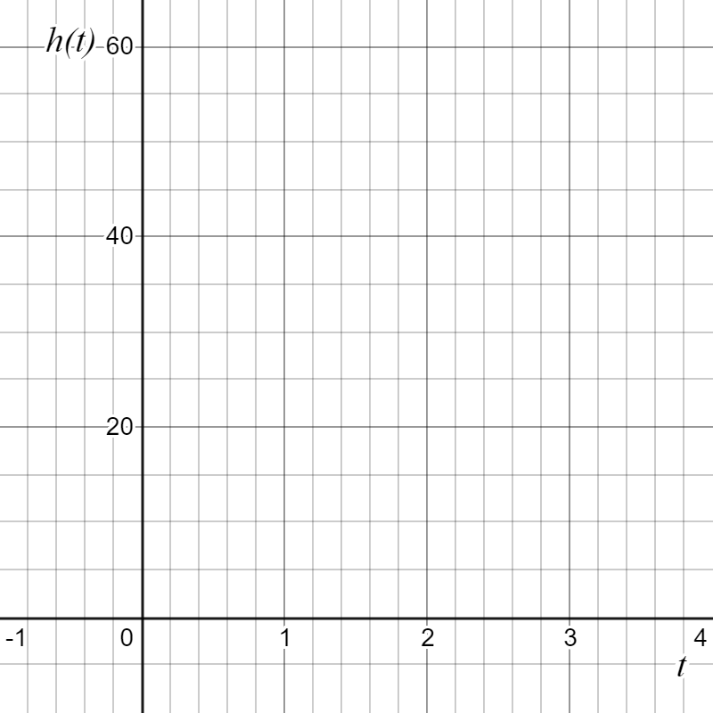
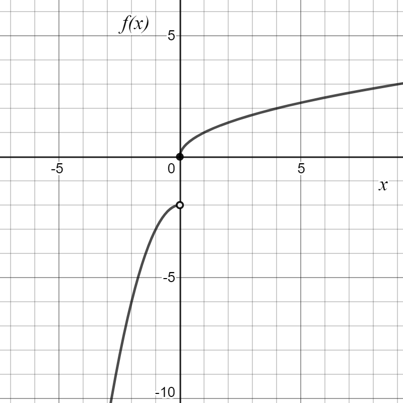

Skip to main content
Contents Dark Mode Prev Up Next \(
\newcommand{\lt}{<}
\newcommand{\gt}{>}
\newcommand{\amp}{&}
\definecolor{fillinmathshade}{gray}{0.9}
\newcommand{\fillinmath}[1]{\mathchoice{\colorbox{fillinmathshade}{$\displaystyle \phantom{\,#1\,}$}}{\colorbox{fillinmathshade}{$\textstyle \phantom{\,#1\,}$}}{\colorbox{fillinmathshade}{$\scriptstyle \phantom{\,#1\,}$}}{\colorbox{fillinmathshade}{$\scriptscriptstyle\phantom{\,#1\,}$}}}
\)
Section 0.2 Review of Function Concepts
In MAT 103, you learned that functions can be represented in different ways, and that considering multiple function representations can give you different insights in solving problems.

Figure 0.2.1. Diagram showing multiple representations of a function.You also learned that functions can be combined in different ways (using any of the above representations) to produce new functions.
\(\displaystyle (f+g)(x)=f(x)+g(x)\)
\(\displaystyle (f-g)(x)=f(x)-g(x)\)
\(\displaystyle (f \cdot g)(x)=f(x) \cdot g(x)\)
\(\displaystyle \left(\frac{f}{g}\right)(x)=\frac{f(x)}{g(x)}\)
\(\displaystyle (f \circ g)(x)=f(g(x))\)
Finally, you learned that a function
\(f\) will have an inverse function
\(f^{-1}\) only if the function is one-to-one (for each output there is only one input).
We will continue to use these building blocks of functions as we explore different kinds of functions in MAT 151.
Problem 0.2.2 .
The distance above the ground of a ball tossed up vertically at a speed of 20 ft/s from the top of a building that is 50 feet tall is given by the equation
\begin{equation*}
h(t)=-16t^2+20t+50
\end{equation*}
Sketch the graph of
\(h\) on the axes below.

Figure 0.2.3. Blank graph for plotting \(h(t)\text{.}\)
How long does it take the ball to hit the ground? Label the appropriate point on your graph from part 1.
What is the maximum height attained by the ball? At what time does it reach this height? Label the appropriate point on your graph from part 1.
At what time(s) is the ball at a height of 52 feet? Label the appropriate point(s) on your graph from part 1.
Solve the inequality
\(h(t)>52\text{.}\)
What is the domain of
\(h\) in the context of this problem? Write your answer in interval notation.
What is the range of
\(h\) in the context of this problem? Write your answer in interval notation.
Is it appropriate to find an inverse function for
\(h\text{?}\) Why or why not?
Use the graph of
\(f\) and the table for
\(g\) shown below, and the function
\(h(x)=\sqrt{x-2}+1\) to answer the following questions.

Figure 0.2.4. Graph of \(f(x)\text{.}\) Table 0.2.5.
\(g(x)\) \(-8\) \(-6\) \(-4\) \(-2\)
Evaluate
\(f(0)\text{.}\)
Solve
\(f(x)=-6\text{.}\)
Solve
\(f(x)=-1\text{.}\)
Solve
\(g(x)=-4\text{.}\)
Solve
\(f(x) \geq 2\text{.}\)
Solve
\(h(x) < 2\text{.}\)
Let
\(j(x)=(g \circ f)(x)\text{.}\) Evaluate
\(j(0)\text{.}\)
Let
\(m(x)=2h(x)-g(x)\text{.}\) Evaluate
\(m(4)\text{.}\)
Let
\(n(x)=f(h(x))\text{.}\) Evaluate
\(n(11)\text{.}\)
What kind of function would you use to model the relationship shown in the table for
\(g(x)\text{.}\) Why?
Write a function equation for
\(g(x)\text{.}\)
Use your function equation from
Item 13 to solve the
\(g(x)=-5\text{.}\)
Write an equation for the inverse of
\(g\text{,}\) \(g^{-1}\text{.}\)
What are the domain and range of
\(h(x)\text{?}\)
Write a function equation for the inverse of
\(h\text{,}\) \(h^{-1}\text{.}\)
What are the domain and range of
\(h^{-1}\text{?}\)
What are the domain and range of
\(f(x)\text{?}\)
What is the average rate of change of
\(f\) on the interval
\([0,4]\text{?}\)
Problem 0.2.6 .
Let
\(y(x)=x^2-4x+3\text{,}\) \(z(x)=-2x+3\text{,}\) and
\(w(x)=\frac{1}{x}\text{.}\) Use these function equations to answer each question below, showing your work algebraically.
Evaluate
\(y(-3)\text{.}\)
Solve
\(z(x)=-4\text{.}\)
Solve
\(w(x)=-2\text{.}\)
Solve
\(z(x) \geq 5\text{.}\)
What is the vertical intercept of
\(z(x)\text{?}\)
What is the
\(x-\) intercept of
\(z(x)\text{?}\)
What is the vertical intercept of
\(y(x)\text{?}\)
What are the
\(x-\) intercepts of
\(y(x)\text{?}\)
Always/Sometimes/Never A function has a vertical intercept.
Always/Sometimes/Never A function has at least one
\(x-\) intercept.
Solve
\(y(x)=z(x)\text{.}\)
Solve
\(y(x)>z(x)\text{.}\)
Solve
\(z(x)=w(x)\text{.}\)
Let
\(q(x)=y(x)-6z(x)\text{.}\) Write a function equation for
\(q(x)\text{.}\)
Let
\(v(x)=(y \circ z)(x)\text{.}\) Write a function equation for
\(v(x)\text{.}\)
Let
\(r(x)=w(z(x))\text{.}\) Write a function equation for
\(r(x)\text{.}\)
What are the domain and range of
\(y(x)\text{?}\)
What is the domain of
\(w(x)\text{?}\)